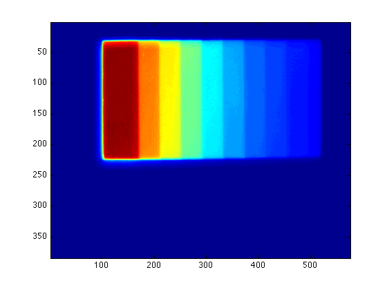
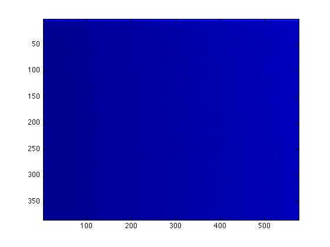
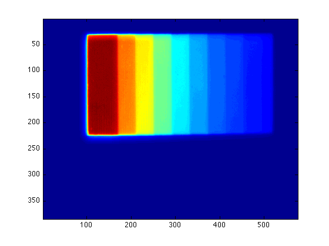
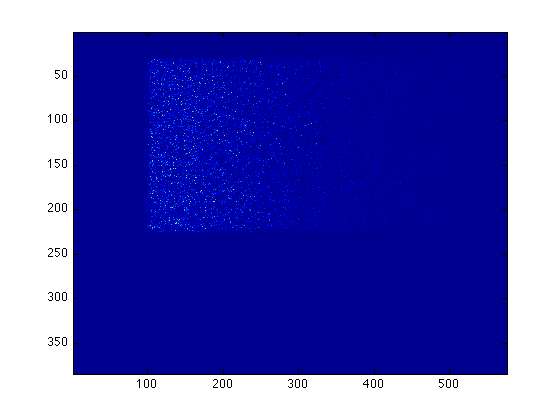

Cleaning Maps
Basically, you should have three maps: your first measurement,
figure(1) imagesc(s1.data)
your second measurement (note that you can use figure(number) to create new figure windows),
figure(2) imagesc(s2.data)
and your bias measurement.
figure(3) imagesc(bias.data)
Now you can have two bias-corrected images sc1 and sc2: (note that you can add ' ; ' at the end of commands to run the commands without printing the results!)
sc1 = s1.data - bias.data; sc2 = s2.data - bias.data;
These two together give you the final map:
sc = (sc1 + sc2)/2;
figure(1) imagesc(sc)
You can also calculate the variance:
diff = s1.data - s2.data; var = diff.*diff;
figure(2) imagesc(var)
These two images will be used to determine the gain of your CCD.